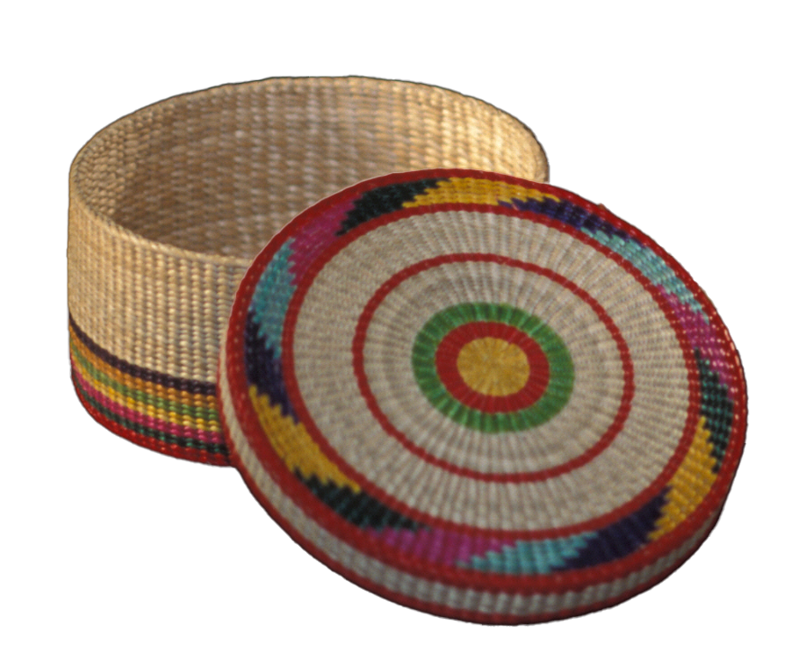

완초장
자리, 돗자리, 방석, 송동이, 합 등을 만든느 재료인 왕골로 기물을 만드는 기술

제작과정
도구를 이용하는 두 가지 방법과 손으로 엮는 방법이 있다. 도구를 이용하는 방법 중 한 가지는 고드랫돌에 맨 두 가닥 실을 자리틀에 걸고 자리알을 두가닥 실로 엮는 노경소직(날줄이 겉으로 들어나 보이며 성글게 짜여진 기법)의 자리와 방석이 있으며 또 하나는 돗틀에 씨실을 촘촘히 걸어 긴 대바늘에 꿴 자리알을 넣으면서 바디로 눌러 다져서 짜는 은경밀직(날줄이 겉으로 들어나지 않으면서 촘촘히 짜여진 기법)의 돗방석과 돗자리가 있다.
손으로 엮는 방법으로는 왕골 4날을 반으로 접어 총 8개의 날줄을 정(井)자형으로 엮은 후 두 개의 씨줄을 엮어 만드는 8각, 원형의 방석이 있고, 삼합, 송동이(작은 바구니) 등도 모두 이 기법을 이용하여 만든다.
사용재료
왕골은 논 또는 습지에서 자라는 1, 2년생 풀로 키는 60∼200㎝에 이르며 완초, 용수초, 현완, 석룡초라고도 한다.
특징
왕골제품은 역사가 오랜 생활문화유산으로, 한때 단절위기도 있었지만 1970년 이후 그 제작활동이 활발히 이루어졌다. 지금까지의 왕골제품은 깔 것과 용기에 불과하였으나, 염색과 굵기의 조절이 용이하며 특별한 도구 없이도 다양한 기물을 창작할 수 있는 좋은 소재이다.
전승자
| 보유구분 | 이름 | 성별 | 기예능 | 지역 | 인정일 |
|---|---|---|---|---|---|
| 보유자 | 이상재(李相宰) | 남 | 완초장 | 인천 | 1996-05-01 |
| 전승교육사 | 유선옥(劉仙玉) | 여 | 완초장 | 인천 | 2004-03-20 |
| 전승교육사 | 양인숙(梁仁淑) | 여 | 완초장 | 인천 | 2004-03-20 |
소재지
인천